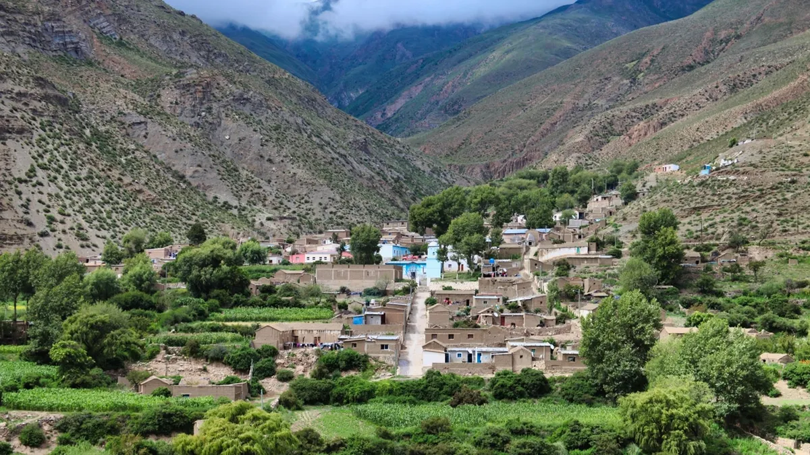
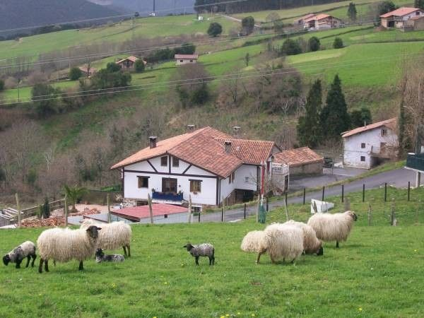

Debemos darles la motivación para que quieran avanzar.


Después de ver pueblos como estos, ¿Quién querría dejarlos abandonados?
Nuestra Organización se originó en la propia ciudad de Buenos Aires, Sin Embargo, nuestro enfoque es hacia el interior, después de viajar por el país, nos dimos cuenta de la infinidad de pueblos hermosos que hay en nuestro país, y que tan monopolizada se encuentra la educación en las zonas urbanas, lo desatendida que está en el resto de lugares. Nuestra organización comenzó con un viaje a Prunamarca, Jujuy, donde nos ofrecimos de voluntarios para restaurar la única escuela del pueblo, y de ahí nació nuestra organización, vamos a darles la forma de volar.